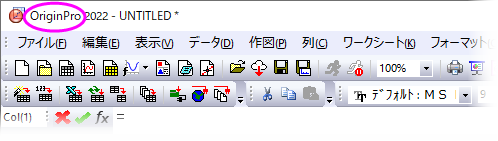
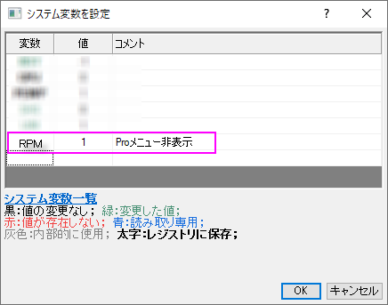

OriginPro
OriginPro
OriginPro, Features
OriginPro：Originの上位版であるOriginProは、Originの全機能に加え、さらに高度な分析ツールや機能を搭載しています。現在ご利用のOriginが通常版かPro版かわからない場合、Originウィンドウのタイトルバーに表示されていますのでご確認ください。
- 
 | 通常版Originでは、一部のメニューコマンドが（Pro）と示されていることがあります。これは、この機能がOriginProでのみ利用可能であることを示しています。Originの通常版を持っていて、OriginProの機能が必要な場合は、Originの担当者に連絡してPro版へのアップグレードを購入できます。
通常版Originを引き続き使用し、（Pro）メニューコマンドを非表示にするには、環境設定：システム変数をクリックし、システム変数の設定ダイアログボックスに次のように入力してOKをクリックします（コメントの入力は任意）。
- 
|
カーブフィット
直交回帰Originの線形・非線形曲線フィット機能に加え、OriginProでは、以下の機能をサポートしています。
- Xエラーバー付き線形フィット
- X/Yエラーバー付き非線形フィット(直交回帰)
- 陰関数フィット(直交距離回帰, ODR)
- フィット比較: カテゴリ内の全ての関数でフィットとランク付けし、1つのデータセットに対する2つのモデル、または、1つのモデルに対する2つのデータセットを比較
- 複数の関数を使った複数曲線のグローバルフィット
詳細は、線形回帰／多項式回帰／多重回帰および非線形曲線フィットのWebページを参照してください。
曲面フィット
曲線フィット, 3D 3D曲線フィットOriginProで3D 曲面フィットを実行することができます。Gauss2D, DoseResponse2D, Exponential2D, Polynomial2Dといった21個の組込曲線フィットモデルから選択できるほか、独自の関数を定義できます。
- ワークシートデータ (XYZ)や行列データ（Z値）をフィットします。
- ピーク特定手法の一つを使って、複数ピークを検出してフィットします。
- 自動ピークパラメータの初期化
- パラメータに制約および境界を与えたりパラメータ値を固定します。
- パラメータと統計結果に加え、残差曲線を出力します。
- フィット曲線に沿って特定のZ値を検索し、出力結果に含めます。
- 結果の自動再計算オプションと、繰り返し使用のためのテーマファイルの保存ツール設定があります。
詳細は、webページ曲面フィットを参照してください。
ピークフィット
ピーク分析 OriginProには、以下をサポートするピークアナライザーがあります。
- ピーク検出（極大、ウィンドウサーチ法、一次微分、二次微分、一次微分後の残差）
- ベースラインを決定して減算（定数、データセット、XPS、最終ポイント重み付け、直線、ユーザ定義、なし）
- 組み込み関数または、ユーザ定義関数でフィット
- 各ピークを異なる関数でフィット
- ピークフィット処理の一部としてベースラインをフィット（ユーザ定義または組込関数）
- フィットパラメータを制御（固定、共有、境界設定）
詳細は、Webページピークフィットを参照してください。
統計
統計
OriginProには、次の分野における高度な統計解析がサポートされています。
多変量解析 統計、多変量
- 記述統計（クロス集計、分布フィット、相関係数、偏相関係数）
- ANOVA （繰り返しのある一元配置/二元配置、三元配置）
- 多変量解析（主成分の数、クラスター、判別分析、正準判別分析、部分最小二乗）
- 生存分析（カプランマイヤー、Cox比例ハザードモデル、ワイブルフィット、生存関数比較検定）
- パラメトリック仮説検定（対応のある行のt検定、1群/2群の分散検定、1群/2群の比率検定）
- ノンパラメトリック検定（対応のあるウィルコクスンの符号付順位検定、対サンプルの符号検定、マンホイットニー検定、2群のコルモゴルフ-スミルノフ検定、クラスカル・ウォリスANOVA、Moodのメディアン検定、Friedman ANOVA、同時検定のサポート）
- 検出力とサンプルサイズ(対応のある標本のt検定、 1群/2群の比率の検定、1群/2群の分散検定、一元配置の分散分析)
- ROC曲線分析
詳細は、Webページ統計を参照してください。
信号処理
信号処理Originの標準の信号処理ツールに加え、OriginProでは以下のことが可能です。
- 信号変換（短時間フーリエ変換、ヒルベルト変換、2D FFT/2D IFFT）
- フィルタリング（IIR フィルタ設計、2D FFTフィルタ）
- 相関係数（2D相関）
- ウェーブレット（連続ウェーブレット変換、離散的ウェーブレット変換、ウェーブレット再構成、マルチスケールウェーブレット分解、スムージング、ノイズ除去、2Dウェーブレット分離、ウェーブレット再構成）
- 立ち上がり時間ガジェット（線形探索、ヒストグラム、最大三角形）
- デシメーション（移動平均、有限インパルス応答)
- コヒーレンス
- 包絡線(上側/下側、包絡線検出中のスムージング）
詳細は、Webページ信号処理を参照してください。
ガジェット
ガジェットOriginのがジェットを使用すると、データプロットを素早く簡単に分析することできます。それぞれの分析に対して特定のガジェットがあり、分析対象データ周辺の関心範囲（ROI)オブジェクトをグラフィカルかつインタラクティブに設定することによって、すべて実行されます。OriginProには、これらの追加ガジェットがあります。
- クラスターガジェット（ROIボックスの内部/外部のにある統計；マスキング、編集、コピー、削除といった機能付）
- 2D積分ガジェット（行列やワークシートデータからのイメージプロットや等高線図で積分）
- 立ち上がり時間ガジェット（ステップ信号の上昇/降下時間の解析）
詳細は、Webページ探索的データ分析を参照してください。
画像処理
画像処理 OriginとOriginProには、簡単に使うことのできる画像処理コレクションがあります。OriginProでは、以下の追加ツールが利用可能です。
- 画像調整（ルックアップテーブル関数、レベリング）
- 画像変換（動的バイナリ、しきい値、RGB、結合/分解、イメージスケール）
- 空間フィルタ（ユーザフィルタ）
- 代数変換（アルファブレンド、XYZに抽出、画像算術演算、数学関数、モフォロジカルフィルタ、ピクセル論理、背景の置き換え、背景の除去、補間した背景の除去）
詳細は、Webページ画像処理を参照してください。
アプリ
多くのアドオンアプリケーションは、OriginPro機能と統合するようにコーディングされているため、実行するにはOriginProライセンスが必要です。OriginProを必要とするアプリは赤色の シンボルでファイル交換の場に表示されています。
シンボルでファイル交換の場に表示されています。
人気のあるOriginProアプリを次に紹介します:
アプリに関する総合的な情報は www.originlab.com/appsを参照してください。